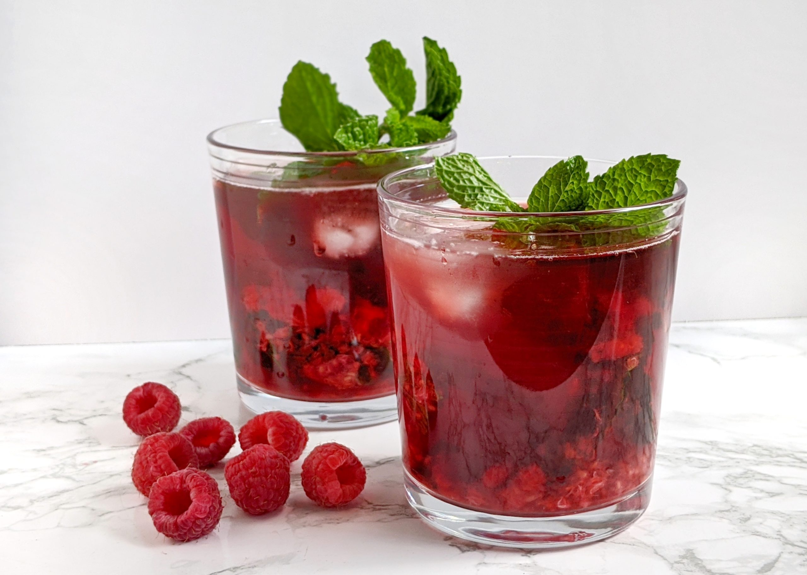

Raspberry Mint Iced Tea
Source: “Mrs. Potts’s Raspberry-Mint Iced Tea” from The Disney Princess Cookbook
Yield: 4 servings
Ingredients
- 1 qt water
- 3 bags herbal raspberry tea
- 2 bags herbal mint tea
- 2 or 3 tbsp honey
- Ice
Instructions
- On the stove, heat the water until it is near boiling. Then remove from heat.
- Steep the bags of raspberry and mint tea in the water for 4 minutes.
- Remove the teabags and stir in the honey while the tea is still warm. Let the sweetened tea cool.
- Fill tall glasses with plenty of ice, pour in the tea, and serve.